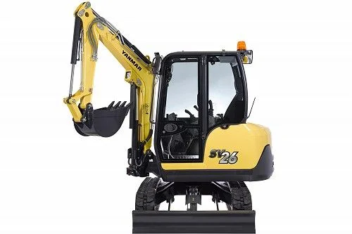
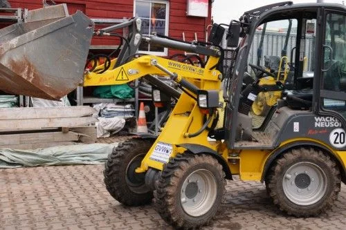
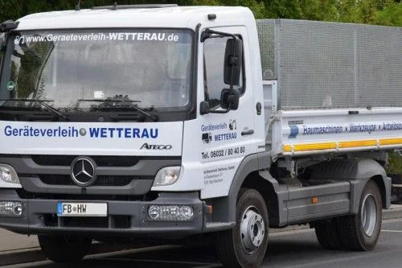

Mietpark
Unsere Kategorien.
Kategorie wählen - dort finden Sie alle Geräte mit Daten und Anfrage-Button.

4 Geräte
Bagger
Mini-, Kompakt- und Mobilbagger von Yanmar
Ansehen →
4 Geräte
Radlader
Wacker Neuson und Yanmar, mit Anbauteilen
Ansehen →
2 Geräte
Arbeitsbühnen
LKW-Arbeitsbühne und Fahrgerüst
Ansehen →
4 Geräte
Anhänger
Humbaur-Anhänger für Transport und Umzug
Ansehen →
2 Geräte
LKW & Kipper
Kipper bis 7,5 t, auch mit Doppelkabine
Ansehen →
2 Geräte
Dumper
Bergmann Dumper mit 4 und 12 t Zuladung
Ansehen →